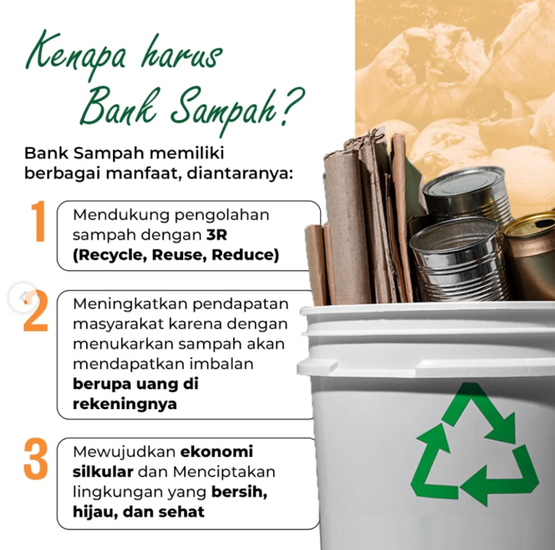

Ekonomi Sirkular
Kurangi, gunakan ulang, daur ulang — beralih dari pola linear ambil–olah–buang menuju sistem ekonomi yang menempatkan efisiensi sumber daya dan perlindungan lingkungan hidup sebagai satu kesatuan yang tidak terpisahkan.

Dari linear menuju sirkular
Ekonomi Sirkular adalah pendekatan pembangunan yang menempatkan efisiensi pemanfaatan sumber daya dan perlindungan lingkungan hidup sebagai satu kesatuan yang tidak terpisahkan. Model produksi dan konsumsi dialihkan dari ekonomi linear (ambil–olah–buang) ke sistem yang menekankan pengurangan limbah, pemanfaatan kembali sumber daya, serta pencegahan pencemaran sejak hulu.
Dengan cara ini, nilai material dipertahankan selama mungkin dalam rantai ekonomi — limbah tidak lagi dipandang sebagai akhir siklus, melainkan sebagai sumber daya yang dapat diolah kembali menjadi bahan baku baru.
Sasaran
- Industri dan dunia usaha yang mendesain ulang produk serta proses produksinya agar hemat sumber daya.
- UMKM dan komunitas yang mengembangkan usaha guna ulang, perbaikan, dan daur ulang.
Pendampingan berjalan bergulir sepanjang tahun. Informasi lengkap pada laman resmi Ekonomi Sirkular membuka situs lain.
Asesmen Mandiri
Ikuti asesmen mandiri ekonomi sirkular untuk memetakan pola pemakaian sumber daya dan timbulan limbah perusahaan/komunitas Anda.
Susun Peta Jalan Sirkular
Rumuskan peta jalan sirkular perusahaan atau komunitas — target pengurangan limbah, guna ulang, dan daur ulang.
Terapkan Pilot
Jalankan proyek percontohan: desain ulang produk, guna ulang material, dan daur ulang limbah menjadi bahan baku.
Laporkan & Raih Apresiasi
Laporkan capaian penerapan ekonomi sirkular dan raih apresiasi dari KLH/BPLH.
Empat prinsip utama ekonomi sirkular
Prinsip-prinsip ini menjaga nilai material tetap berputar dalam rantai ekonomi dan mencegah pencemaran sejak hulu.
Efisiensi & konservasi sumber daya
Desain produk dan proses produksi yang hemat energi serta bahan baku sejak tahap perencanaan.
Perpanjangan siklus hidup produk
Guna ulang dan perbaikan agar produk terpakai lebih lama sebelum menjadi limbah.
Limbah sebagai sumber daya
Daur ulang mengubah limbah menjadi bahan baku baru yang kembali masuk ke rantai produksi.
Pencegahan pencemaran
Terintegrasi dalam siklus produk secara menyeluruh, dari desain hingga akhir pakai.
Mengapa beralih ke ekonomi sirkular?
Tekanan sumber daya menurun
Menurunkan tekanan terhadap sumber daya alam karena material dipakai lebih lama dan berulang.
Pencemaran & sampah berkurang
Mengurangi pencemaran dan timbulan sampah melalui pencegahan sejak hulu.
Efisiensi ekonomi
Meningkatkan efisiensi pemanfaatan sumber daya dan energi dalam proses produksi.
Lapangan kerja hijau
Menciptakan lapangan kerja hijau dan peluang usaha guna ulang serta daur ulang.
Pembangunan berkelanjutan
Mendukung pencapaian target pembangunan berkelanjutan dan pengendalian perubahan iklim.
Daya saing usaha
Efisiensi bahan baku dan energi memperkuat daya saing industri, UMKM, dan komunitas.
Peran KLH & BPLH: Kementerian Lingkungan Hidup merumuskan kebijakan nasional ekonomi sirkular; Badan Pengendalian Lingkungan Hidup menjalankan fungsi pemantauan, pengawasan, dan penegakan hukum lingkungan.
Sumber: kemenlh.go.id — Ekonomi Sirkular
Mulai transformasi sirkular Anda
Ikuti asesmen mandiri, susun peta jalan, dan jadikan limbah sebagai sumber daya bernilai.